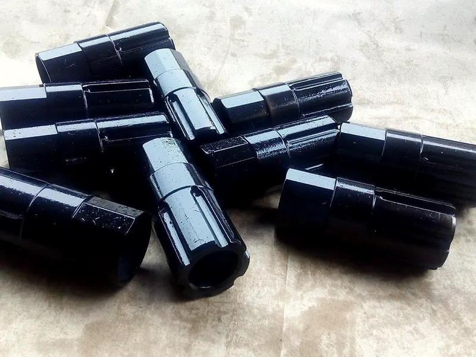
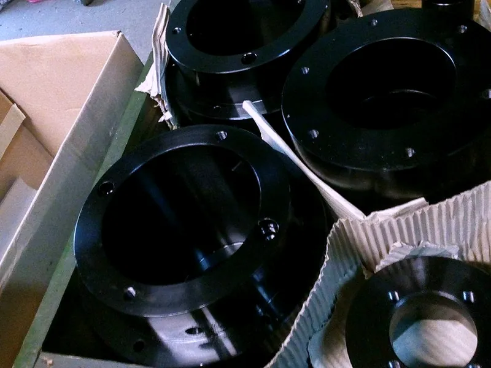
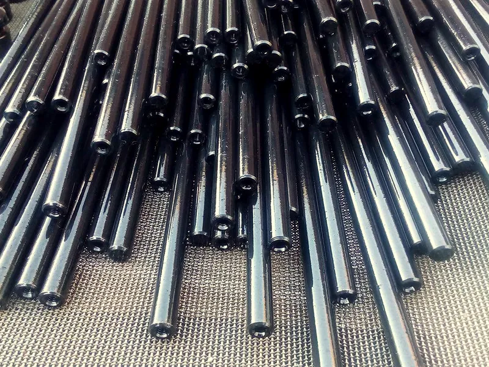
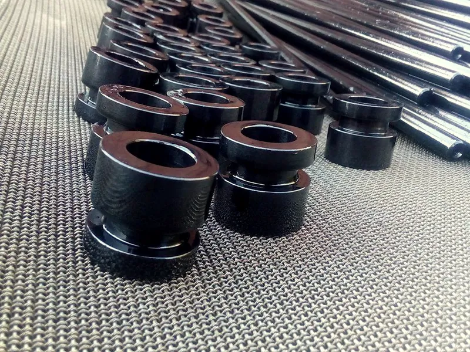
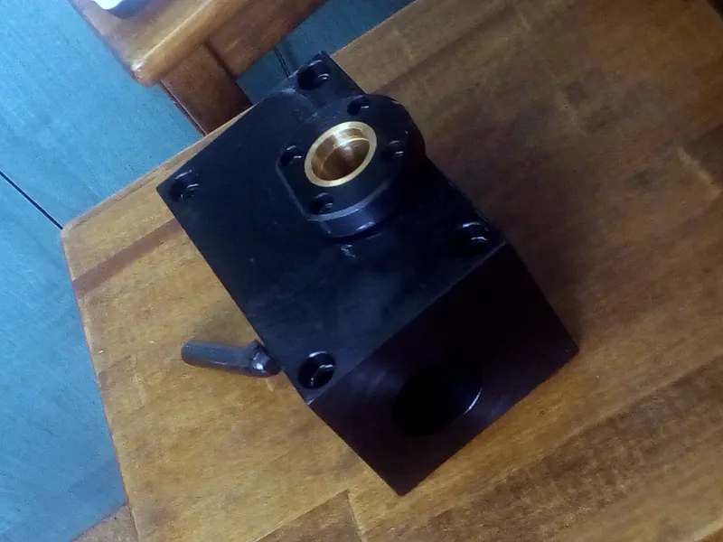

Czernienie (oksydowanie) stali
Czernienie na gorąco tworzy na stali cienką warstwę tlenków o głębokiej, czarnej barwie i daje czasową ochronę przed korozją. Typowo: wałki, koła zębate, tuleje, kołnierze, części maszyn i przyrządów.
- Materiał
- stal
- Wielkość
- drobnica i elementy wielkogabarytowe